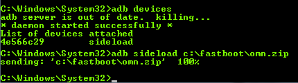

here we can observe the final steps of fixing a bad device wipe.
looking to sell my Oppo Find 5 phone, I happily booted into recovery mode and selected a full wipe, instead of a standard factory reset.
this kills the ROM.
instead of formatting just the /system, /cache and some other partitions, the whole ROM was wiped from the device.
welp.
fiddled around with incompatible drivers downloaded from the manufacturer’s chinese-only website, read a bunch of posts on xda and finally managed to install the correct driver.
at least I can be absolutely sure that the phone cannot be traced back to me
¯\_(ツ)_/¯